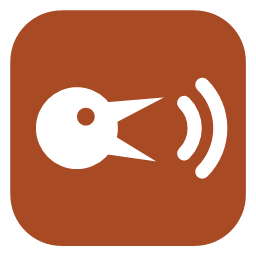
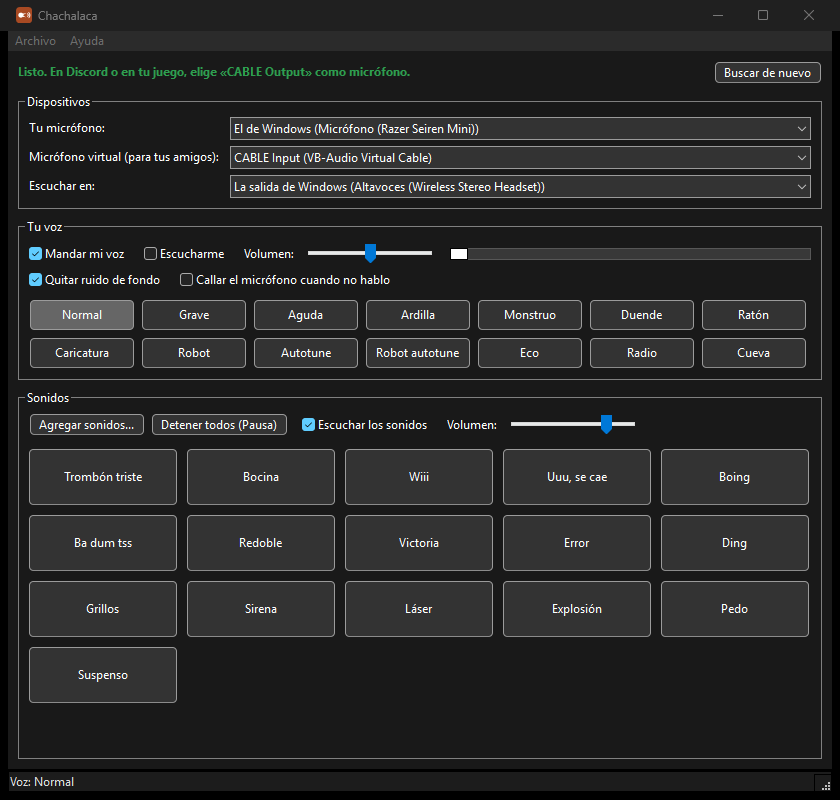

Sonidos y cambio de voz · Windows 10 y 11 (64 bits)
Chachalaca: sonidos y cambio de voz gratis para Discord.
La chachalaca es el pájaro más escandaloso del monte: este programa hace que tus amigos te escuchen igual. Pone sonidos en tu micrófono y te cambia la voz en vivo, para Discord y los juegos con chat de voz.
Gratis, sin publicidad y de código abierto · Código en GitHub

Qué hace
- 16 sonidos hechos por Brizna Soft desde cero, sin grabaciones de nadie: trombón triste, bocina, boing, redoble, sirena, láser y más. También puedes agregar los tuyos (WAV, MP3 o FLAC).
- 13 efectos para tu voz en vivo: Grave, Aguda, Ardilla, Monstruo, Duende, Ratón, Caricatura, Robot, Autotune, Robot autotune, Eco, Radio y Cueva.
- Quita el ruido de fondo y, si quieres, calla tu micrófono cuando no hablas.
- Atajos de teclado que funcionan dentro de los juegos. La tecla Pausa detiene todos los sonidos.
- Micrófono virtual incluido: VB-CABLE, de VB-Audio, se instala con un botón.
- Sin publicidad, sin cuentas y sin recoger tus datos: solo se conecta a internet si buscas una actualización.
Cómo instalarlo
- Baja el .zip con el botón «Descargar para Windows».
- Descomprímelo (clic derecho y «Extraer todo») y abre
Chachalaca.exe. No hay que instalarlo. Si Windows muestra «Windows protegió su PC», es porque el programa es nuevo y todavía no tiene firma digital: pulsa «Más información» y luego «Ejecutar de todas formas». - Si falta el micrófono virtual, pulsa «Instalar el micrófono virtual» y acepta los avisos de Windows. Si después dejas de oír tus juegos, Chachalaca te abre la página de Sonido para que elijas otra vez tus audífonos.
- En Discord: Ajustes de usuario → Voz y video → Dispositivo de entrada → CABLE Output. Pon «Supresión de ruido» en Ninguna; si no, Discord borra los sonidos.
- En tu juego: en las opciones de chat de voz, elige CABLE Output como micrófono.
El micrófono virtual es de VB-Audio
Para que tus amigos te escuchen, Chachalaca usa VB-CABLE, el micrófono virtual de VB-Audio, que viene de www.vb-cable.com. Va dentro del .zip tal como lo publica VB-Audio, y se instala con un botón. VB-CABLE no es de Brizna Soft: es donationware, y toda ayuda es bienvenida. Si te sirve, apoya a su autor.
Cómo saber que es el original
Cada versión la arma GitHub a partir del código público, y junto a cada .zip publicamos su huella SHA-256 (el archivo que termina en .sha256). Para comprobarla, abre PowerShell en la carpeta de la descarga y escribe Get-FileHash seguido del nombre del .zip. Si sale la misma huella, el archivo es el original.
¿Algo no funciona?
Cuéntanos en GitHub y lo arreglamos a la vista de todos. Si te sirve, también puedes apoyarnos con una donación.